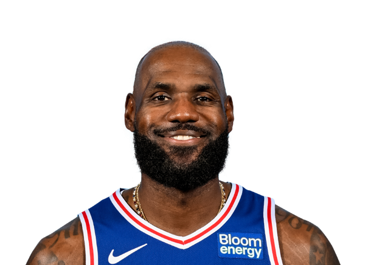
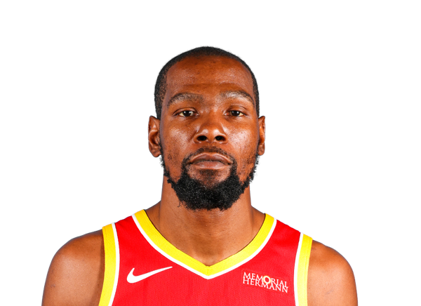
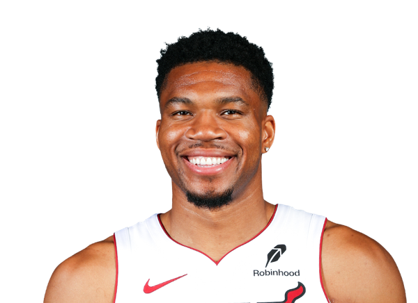
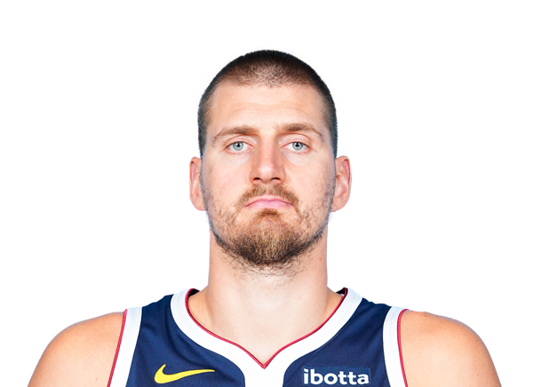
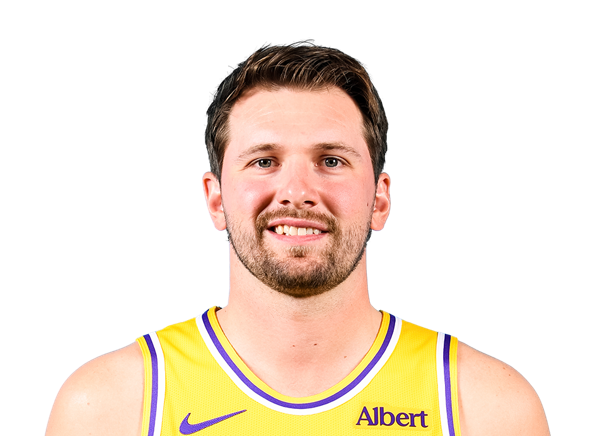
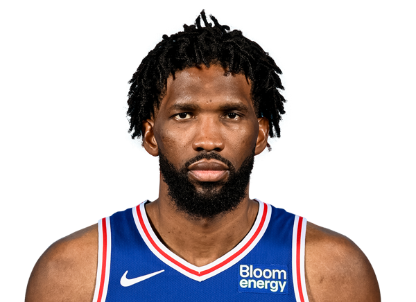
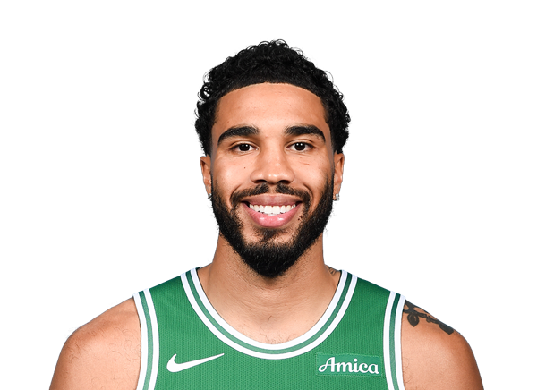
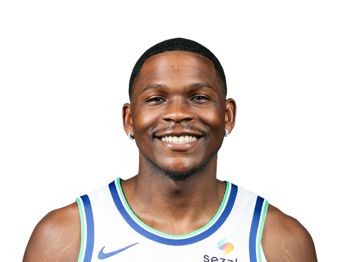

#01 LeBron James

Forward | Los Angeles Lakers
All-around scoring, court vision, leadership, and longevity.
#02 Stephen Curry

Guard | Golden State Warriors
Elite long-range shooting, movement, and creative playmaking.
#03 Kevin Durant

Forward | Houston Rockets
Smooth scoring from the perimeter, mid-range, and around the basket.
#04 Giannis Antetokounmpo

Forward | Milwaukee Bucks
Powerful drives, transition speed, rebounding, and defensive range.
#05 Nikola Jokic

Center | Denver Nuggets
Outstanding passing vision, touch, and decision-making from the center position.
#06 Luka Doncic

Guard | Los Angeles Lakers
Creative ball handling, passing, step-back shooting, and pace control.
#07 Joel Embiid

Center | Philadelphia 76ers
A powerful inside presence with polished footwork and perimeter scoring.
#08 Jayson Tatum

Forward | Boston Celtics
Versatile shot creation, perimeter scoring, and two-way play.
#09 Shai Gilgeous-Alexander

Guard | Oklahoma City Thunder
Change of pace, controlled drives, mid-range scoring, and finishing.
#10 Anthony Edwards

Guard | Minnesota Timberwolves
Explosive athleticism, confident scoring, and high-energy play.